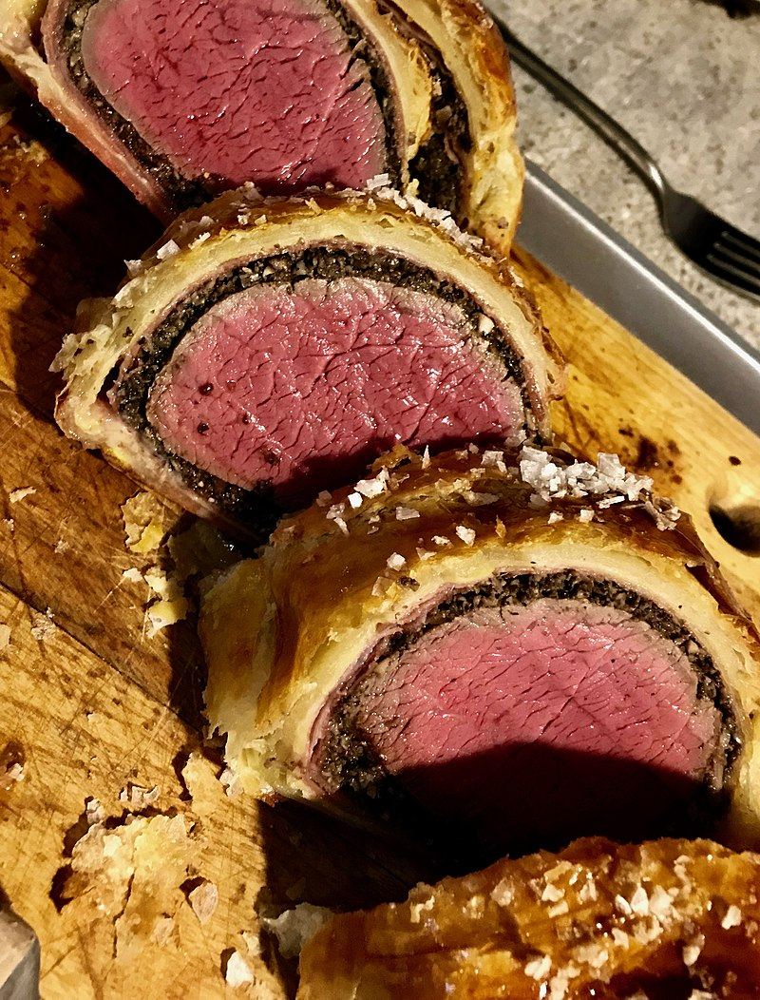

Beef Wellington

Description
One of Gordon Ramsay's signature dishes, the Beef Wellington is sure to give an explosion of flavour!
Ingredients
- Beef Filet
- Mushrooms
- Dejon Mustard
- Cream
- Olive Oil
- Rosemary
- Thyme
- Pastry Dough
- Cling Film Wrap
Steps
- Roast beef filet in an oven slowly for 8 hours with rosemary and thyme
- Cut up mushrooms very finely
- Dehydrate mushrooms in a pan, then add in cream
- Reduce until thickened
- Brush dejon mustard over beef filet
- Spoon mushroom paste over beef filet and wrap in cling film
- Refrigerate overnight
- Remove cling film and wrap in pastry dough
- Cut pastry dough to create kite pattern and lay over
- Refrigerate overnight
- Bake slowly for 2 hours